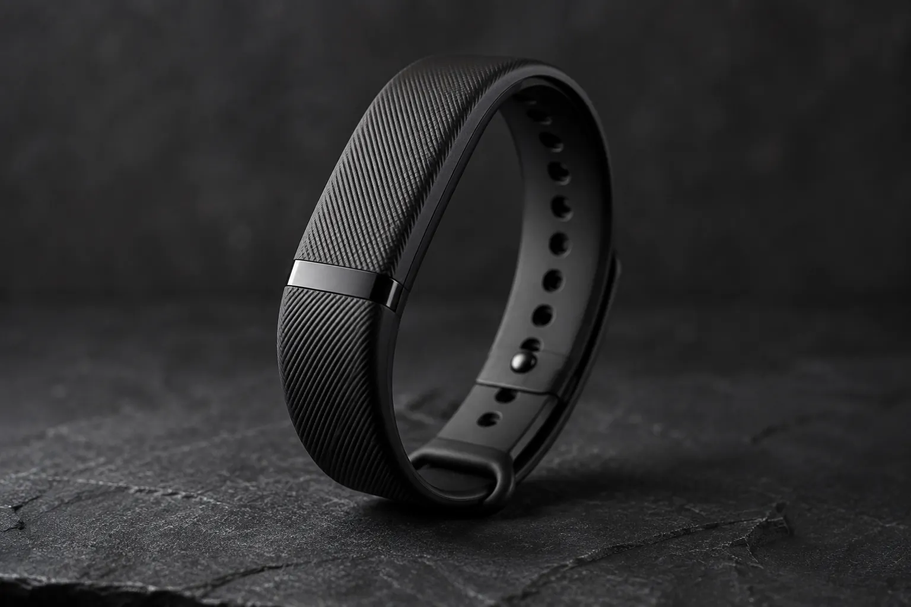
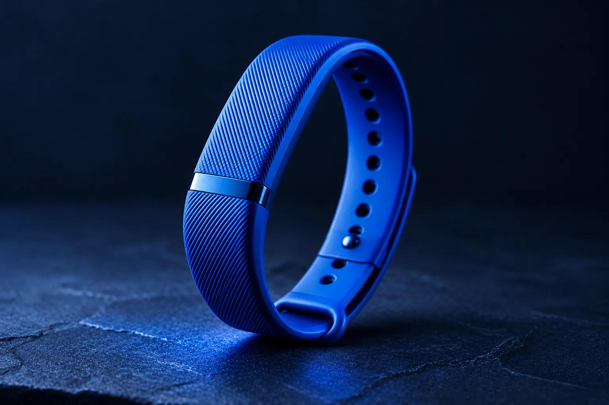
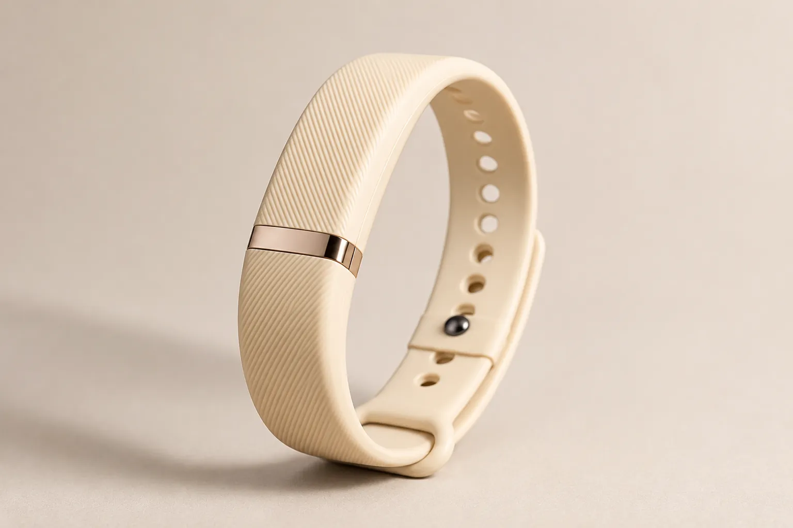
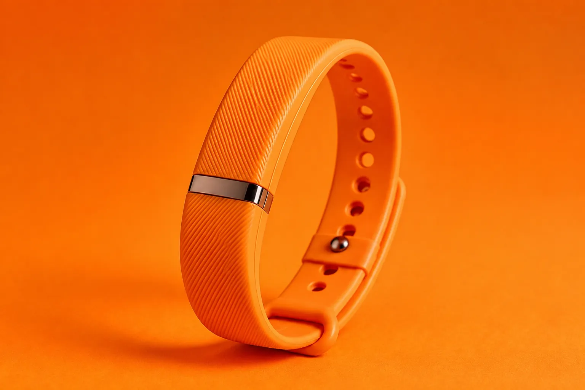
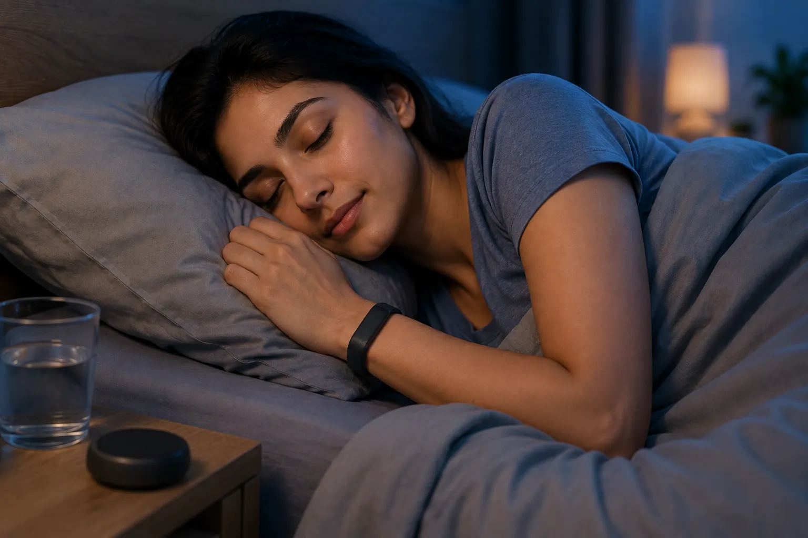
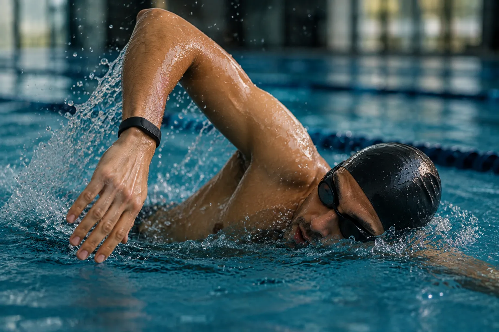
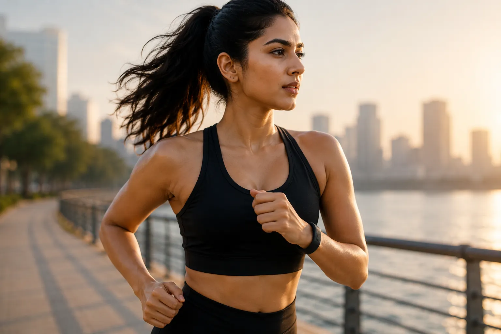
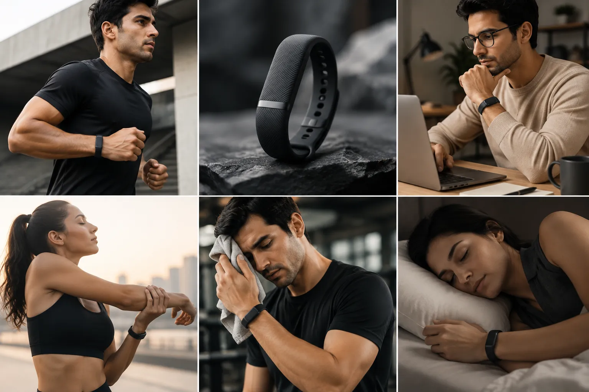

Continuous Health · Concept v1.1
Band
The part you never take off.
A passive companion for the hours the watch can’t cover. No display, no notifications, no decisions to make. It closes the gap and gets out of the way.
Independent concept · no such product exists1

The highlights
What it is,
in six lines.
24h
Unbroken, when paired with a watch. The two devices are never off the wrist at the same time — because their charge windows are deliberately opposed.
21 days
Modelled, not measured.2 Achievable only because there is nothing to light up and sampling is deliberately coarse.
None
Not a cost saving. A display would demand a battery, a battery would demand nightly charging, and the gap would reopen.
14 g
Including the strap. Light enough to sleep in without noticing, which is the only test that matters for a device worn overnight.
5 ATM
Pool, shower, open water.3 Removing a band to wash is a habit, and habits are how records get holes in them.
Labelled
Band-derived hours are marked as Band-derived. Lower-fidelity data is never quietly blended into the watch’s record.
Colours
Four finishes.
One of them disappears.
A device meant to be forgotten should be easy to forget. Midnight is the default for exactly that reason — the others exist because not everyone wants to disappear.



Midnight
Concept renders · colours indicative6
The gap, closed
Two devices.
Opposite charge windows.
Version 1.0 of this concept left the companion’s power question open, and said the shape should follow the answer. This is the answer: the Band charges during the day, while the watch is on the wrist doing the higher-fidelity work.
- Outer ring — the watch. Highest fidelity and the anchor every other signal is calibrated against. It comes off once a day, and that hour is a hole in the record.
- The gap. 30–75 minutes of charging, carved out of the same 24-hour cycle. Whatever happens in it isn’t measured.
- Inner ring — the Band. Coarser, but continuous. It is charged in a window chosen precisely because the watch is covering it.
Fidelity for continuity
The Band samples less often and senses less. That is the price of three weeks between charges, and it is stated rather than buried — every hour it contributes is labelled as its own.
Never both off at once
The pairing is only worth anything if the charge windows are anti-phase. The system schedules the Band’s charge prompt for a period when the watch has been reliably worn.
A gap is still a gap
If both devices are off, the Timeline shows nothing there. Coverage is never interpolated to look tidier than it was — the principle carried over unchanged from v1.0.
Design
Nothing to check.
Every screen on a wearable is a small invitation to look at it. This one removes the invitation entirely — not to be austere, but because the physics only work if nothing is drawing power.
- 01
No display
The largest single power draw on any wrist device, and the thing that turns a health sensor into a notification surface.
- 02
No buttons
There is nothing to configure on the wrist. What it senses and what it shares are decided once, in the app, in plain language.
- 03
No haptics
It cannot interrupt you. If something needs saying, it is said once, later, on a device you chose to look at.
- 04
One light, once
A single indicator, visible only while charging. The rest of the time the Band gives no sign that it is doing anything at all.
Calm technology was the fourth principle in v1.0. On a device with a screen it is a discipline you have to keep choosing. Here it is a property of the hardware.

Sleep
The eight hours
most records miss.
Sleep is where continuous tracking is most valuable and most often interrupted — it is the shift people are least willing to wear something heavy through.
The published evidence is clear that consumer wearables know reliably that you slept, and much less reliably how.4 The Band reports duration and timing with confidence, and stage estimates marked as estimates. It does not round that difference away.
Concept visualisation

Water
No reason
to take it off.
Rated to 5 ATM and sealed as a single piece — no removable module, no charging port to keep dry.3
This is not a swimming feature. It is a removal-prevention feature. Every reason to unclasp a band is a future hole in the record, and washing your hands is the most common one there is.
Concept visualisation
Every day
Worn through
the ordinary hours.
The interesting data isn’t in the workout. It’s in the difference between this Tuesday and your last forty — which only exists if the ordinary days were recorded too.


Continuity
One record,
assembled from all of it.
Training, working, recovering, sleeping. None of these are separate modes to switch between — they are the same person, on the same day, and the whole argument of this concept is that they should be recorded as one.
Concept visualisation
Power
Charged in the one window
that doesn’t cost anything.
The obvious objection to a companion device is that it reintroduces the problem it exists to solve: another thing to charge, another gap. That objection is only answered by when it charges, not how fast.
Watch — between charges 18–24 h
Band — between charges 21 days
Band — full charge ~90 min
Roughly seventeen charge events a year, each one scheduled into an afternoon the watch was already covering.
What this costs
Three weeks is not free. It buys its runtime by having no display, sampling at a fraction of the watch’s rate, and carrying a smaller sensor set. The Band is a lower-resolution instrument, and the concept only works if the product says so plainly rather than presenting both sources as equivalent.
The figure itself is modelled from a power budget, not measured on hardware.2 No unit has been built.
The v1.0 hardware section also noted that a ring-shaped companion would meet Oura at its strongest point, overnight. A band avoids that collision, sits at a sensing site already validated by every wrist wearable on the market, and inherits an entire ecosystem’s worth of strap conventions.
Limits
What it doesn’t do.
Product pages don’t normally have this section. This concept has argued since v1.0 that stating the boundary is part of the design, so here it is.
It needs the watch
On its own the Band is a coarse instrument with no anchor to calibrate against. Sold alone it would be a worse product than the thing it is meant to complete.
No medical claims
No ECG, no blood oxygen, no arrhythmia detection. Those are a regulated category, and putting them on a low-power companion would be the wrong place to start.
No primary research yet
v1.0 was explicit that no user research had been conducted for this concept. That is still true. Nothing on this page is evidence that people want it.
The recovery model
How Band-derived hours should be weighted against watch-derived hours in a single score is an open modelling question. Naming it is not the same as answering it.
Specification
Concept
specification.
Target figures for an unbuilt device.1 They are internally consistent with the power budget above, and nothing more than that.
- Form
- Single-piece elastomer band, sealed. Sensor module integrated into the strap — no removable puck.
- Dimensions
- 34.2 × 18.6 × 8.4 mm at the module Strap 18 mm wide; two lengths, 130–180 mm and 155–215 mm.
- Weight
- 14 g including strap
- Materials
- Fluoroelastomer strap, anodised aluminium accent bar, sapphire-coated sensor window
- Finishes
- Midnight, Cobalt, Starlight, Ember
- Display
- None — by design
- Controls
- None. Single charge-state indicator.
- Sensors
- Photoplethysmography (green + infrared), 3-axis accelerometer, skin temperature, capacitive wear detection
- Not included
- ECG · blood oxygen · GPS · speaker · microphone · altimeter
- Sampling
- Adaptive, 1–12 samples per minute Raised on detected activity, lowered when still. The single largest lever on the battery figure.
- Battery
- 21 days typical · ~90 min to full2
- Charging
- Contactless, via a puck. Prompted in daylight hours, only when the watch has been worn.
- Water
- 5 ATM, IP68 — pool, shower, open water3
- Connectivity
- Bluetooth LE to phone only. No cellular, no Wi-Fi, no direct network path.
- Storage
- Up to 30 days on-device, so a missed sync is not a lost record
- Processing
- Baseline modelling and inference run on the phone, on-device. Nothing is uploaded to produce an insight.
- Data labelling
- Every Band-derived hour is marked as such in the Timeline and carries its own confidence level
- Status
- Concept. No unit exists, no schedule, no price.
Where this sits
The hardware is
the smaller half.
A band that never comes off is only useful if something intelligent is reading it. The argument for that — the research, the four questions, the app, and everything this page assumes — is on the concept site.
Notes
- Continuous Health Band is an independent design concept by Muthukumar D. No such product exists, none is planned, and nothing on this page describes a product any company has announced. ↩
- The 21-day figure is derived from a modelled power budget at the stated sampling rates, not measured on hardware. No prototype has been built.
- 5 ATM / IP68 is a design target for an unbuilt device, not a certification. No unit has been submitted for ingress testing.
- Schyvens A-M, Peters B, Van Oost NC, et al. A performance validation of six commercial wrist-worn wearable sleep-tracking devices for sleep stage scoring compared to polysomnography. SLEEP Advances 6(2): zpaf021, 2025. doi:10.1093/sleepadvances/zpaf021
- Quer G, Gouda P, Galarnyk M, Topol EJ, Steinhubl SR. Inter- and intraindividual variability in daily resting heart rate…: retrospective, longitudinal cohort study of 92,457 adults. PLOS ONE 15(2): e0227709, 2020. doi:10.1371/journal.pone.0227709
- All product imagery is a concept visualisation of an unbuilt device. Colours, materials and finishes are indicative and would change under manufacturing constraints.